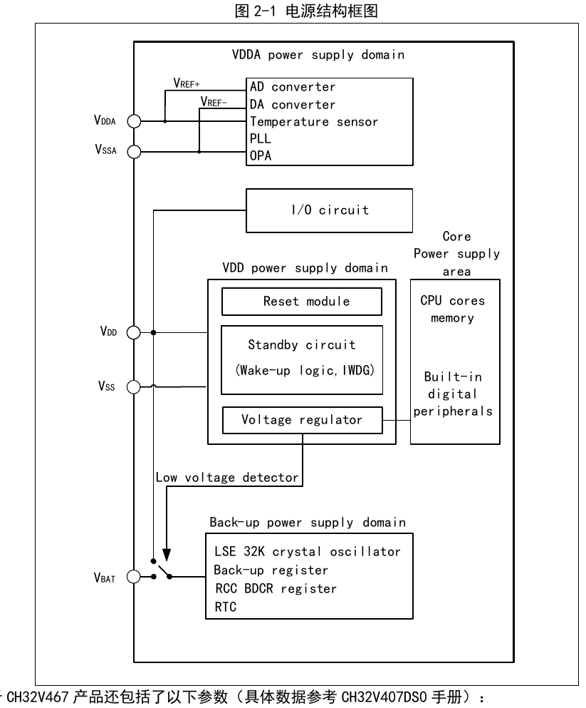
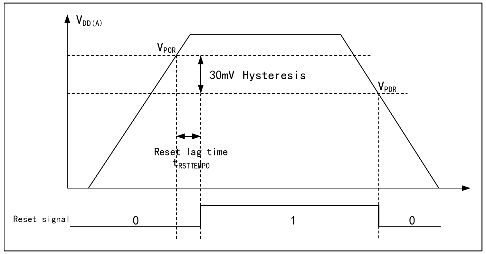
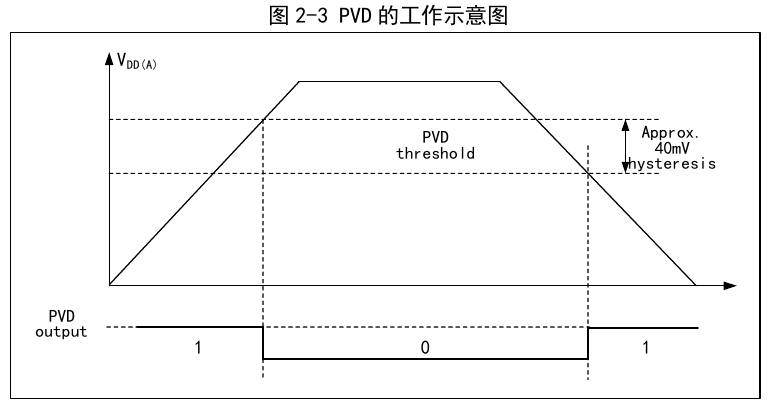

The system operating voltage VDD ranges from 2.9 to 3.6V. A built-in voltage regulator provides the low-voltage supply required by the core. When the main supply VDD is powered down, a backup supply such as a battery can power the Real-Time Clock (RTC) and backup registers via the VBAT pin. If no backup supply is needed, it is recommended to connect VDD directly to the VBAT pin.
The VDDA and VSSA pins are dedicated to supplying power to the analog-related circuits in the system, including the ADC, DAC, temperature sensor, etc. VREF+ and VREF- serve as the reference points for some analog circuits and are internally equal to VDDA and VSSA.

For the CH32V467 product, the following parameter is also included (refer to the CH32V407DS0 manual for specific data):
VDD18: Supplies power to the on-chip PSRAM module.
After the main supply VDD is powered down, the analog switch switches to VBAT, and the backup domain is powered by the VBAT pin. In this case, PC13–PC15 cannot be used as GPIO; only the following functions are available:
When the main supply VDD is powered on and stable, the system automatically switches the backup domain to be powered by VDD, and PC13–PC15 can be used as GPIO functions.
When PC13–PC15 pins are used as GPIO outputs, the speed must be limited to below 2 MHz, the maximum load capacitance is 30 pF, and they must not be used in applications requiring continuous current output or sinking, such as LED driving.
The system integrates Power-on Reset (POR) and Power-down Reset (PDR) circuits. When the chip supply voltage VDD and VDDA fall below the corresponding threshold voltages, the system is reset by the relevant circuitry, without the need for an external reset circuit. For the parameters of the power-on threshold voltage VPOR and the power-down threshold voltage VPDR, please refer to the corresponding datasheet.

The Programmable Voltage Detector (PVD) is mainly used to monitor changes in the system main supply. It compares with the threshold voltage set by the PLS[1:0] field of the power control register PWR_CTLR. Together with the external interrupt register (EXTI) configuration, it can generate a relevant interrupt to promptly notify the system to perform pre-power-loss operations such as data saving.
The specific configuration is as follows:

After system reset, the microcontroller is in normal operating state (run mode). At this point, system power consumption can be reduced by lowering the main system frequency, turning off clocks of unused peripherals, or reducing the clock of working peripherals. If the system does not need to operate, it can be set to enter a low-power mode and be brought out of this state by a specific event.
The microcontroller currently provides 3 low-power modes, which are distinguished by the differences in the operation of the processor, peripherals, voltage regulator, etc.:
| Mode | Entry | Wakeup source | Effect on clocks | Voltage regulator |
|---|---|---|---|---|
| Sleep (SLEEP) | WFI / WFE | Any interrupt wakeup / wakeup event wakeup | Core clock off, other clocks unaffected | Normal |
| Stop (STOP) | SLEEPDEEP set to 1, PDDS cleared to 0, WFI or WFE | Any external interrupt/event (EXTI signal), external reset signal on NRST, IWDG reset. EXTI signals include any of 77 external I/O ports, PVD output, RTC alarm, I3C wakeup signal, USB wakeup signal. | HSE, HSI, PLL and peripheral clocks off | Normal: LPDS=0, or Low power: LPDS=1 |
| Standby (STANDBY) | SLEEPDEEP set to 1, PDDS set to 1, WFI or WFE | Any external event (EXTI signal), external reset signal on NRST, IWDG reset, a rising edge on the WKUP pin. EXTI signals include any of 77 external I/O ports, RTC alarm. | HSE, HSI, PLL and peripheral clocks off | Off |
WFI: The microcontroller is woken up by an interrupt source responded to by the interrupt controller. After wakeup, the interrupt service function will be executed first (except for microcontroller reset).
WFE: A wakeup event triggers the microcontroller to exit the low-power mode. Wakeup events include:
Enabled: After executing the WFI or WFE instruction, the microcontroller ensures that it enters the low-power mode after all pending interrupt services have exited.
Not enabled: After executing the WFI or WFE instruction, the microcontroller immediately enters the low-power mode.
Enabled: All interrupts or wakeup events can wake up the low-power mode entered via executing WFE.
Not enabled: Only interrupts or wakeup events enabled in the interrupt controller can wake up the low-power mode entered via executing WFE.
In this mode, all I/O pins retain their states from run mode, and all peripheral clocks are normal. Therefore, before entering sleep mode, try to turn off unused peripheral clocks to reduce power consumption. This mode has the shortest wakeup time.
Entry: Configure the core register control bit SLEEPDEEP=0, power control register PDDS=0; LPDS determines the state of the internal regulator. Execute WFI or WFE; optionally SEVONPEND and SLEEPONEXIT.
Exit: Any interrupt or wakeup event.
Stop mode is based on the core's deep sleep mode (SLEEPDEEP) combined with the peripheral clock control mechanism, and puts the voltage regulator into a lower power consumption state. In this mode, the high-frequency clock (HSE/HSI/PLL) domain is turned off, SRAM and register contents are retained, and I/O pin states are maintained. After wakeup from this mode, the system can continue to run, with HSI as the default system clock.
If flash programming is in progress, the system will not enter stop mode until the memory access is complete; if access to PB is in progress, the system will not enter stop mode until the PB access is complete.
Modules that can operate in stop mode: Independent Watchdog (IWDG), Real-Time Clock (RTC), Low-Speed Clock (LSI/LSE).
Entry: Configure the core register control bit SLEEPDEEP=1, power control register PDDS=0, optionally the LPDS bit. Execute WFI or WFE; optionally SEVONPEND and SLEEPONEXIT.
Exit: Any external interrupt/event (EXTI signal), external reset signal on NRST, IWDG reset. EXTI signals include any of 77 external I/O ports, PVD output, RTC alarm, I3C wakeup signal, USB wakeup signal.
In standby mode, the main system LDO is turned off, and a low-power LDO powers the wakeup circuit. All other digital circuits are powered down, and FLASH is in a powered-down state. Waking up the system from standby mode generates a reset, and SBF (PWR_CSR) is set. After wakeup, querying the SBF status indicates the low-power mode before wakeup; SBF is cleared by the CSBF (PWR_CR) bit. In standby mode, the contents of the 32 KB SRAM can be retained (depending on the configuration before sleep), and the backup register contents are retained.
Modules that can operate in standby mode: Independent Watchdog (IWDG), Real-Time Clock (RTC), Low-Speed Clock (LSI/LSE).
Entry: Configure the core register control bit SLEEPDEEP=1, power control register PDDS=1. Execute WFI or WFE; optionally SEVONPEND and SLEEPONEXIT.
Exit: Any external event (EXTI signal), external reset signal on NRST, IWDG reset, a rising edge on the WKUP pin. EXTI signals include any of 77 external I/O ports, RTC alarm.
In standby mode, when powered normally, configuring R32KSTY=1 in the PWR_CTLR register controls the 32K-byte RAM to remain powered; when powered by VBAT, configuring R32KVBAT=1 in the PWR_CTLR register controls the 32K-byte RAM to remain powered. On this basis, by configuring RAMLV=1 in the PWR_CTLR register, the RAM low-voltage mode is enabled, achieving the lowest power consumption.
The RTC can achieve auto wakeup without an external interrupt. By programming the time base, the system can be periodically woken up from stop or standby mode.
The precise external low-frequency 32.768 kHz crystal oscillator LSE can be selected as the RTC clock source, or the internal LSI oscillator can be selected as the RTC clock source. The accuracy and power consumption specifications of the LSI are inferior to those of the LSE.
The RTC alarm event can wake the MCU up from stop mode. To implement this function, external interrupt line 17 must be configured, and the RTC must be set to generate an alarm event. To wake up from standby mode, only the RTC needs to be set to generate an alarm event.
| Name | Address | Description | Reset Value |
|---|---|---|---|
| R32_PWR_CTLR | 0x40007000 | Power control register | 0x1B000200 |
| R32_PWR_CSR | 0x40007004 | Power control/status register | 0x00000000 |
Offset address: 0x00
| 31 | 30 | 29 | 28 | 27 | 26 | 25 | 24 | 23 | 22 | 21 | 20 | 19 | 18 | 17 | 16 |
| Reserved | LDO_VDD12A[2:0] | LDO_VDDK[2:0] | Reserved | RAMLV | Reser- ved | R32K VBAT | Reser- ved | R32K STY | |||||||
| 15 | 14 | 13 | 12 | 11 | 10 | 9 | 8 | 7 | 6 | 5 | 4 | 3 | 2 | 1 | 0 |
| Reserved | LDO18_EN | DBP | Reser- ved | PLS[1:0] | PVDE | CSBF | CWUF | PDDS | LPDS | ||||||
| Bits | Name | Access | Description | Reset |
|---|---|---|---|---|
| [31:30] | Reserved | RO | Reserved. | 0 |
| [29:27] | LDO_VDD12A[2:0] | RW | Adjusts the internal analog supply voltage. | 0x3 |
| [26:24] | LDO_VDDK[2:0] | RW | Adjusts the digital core voltage, VDDK voltage value. | 0x3 |
| [23:21] | Reserved | RO | Reserved. | 0 |
| 20 | RAMLV | RW | RAM low-voltage mode enable control bit (relatively lower power consumption): 1: Enabled; 0: Disabled. Note: Valid when the LPDS bit of the PWR_CTLR register is 1. | 0 |
| 19 | Reserved | RO | Reserved. | 0 |
| 18 | R32KVBAT | RW | Control bit for whether the 32K RAM is powered in Standby mode when powered by VBAT: 1: Powered; 0: Not powered. | 0 |
| 17 | Reserved | RO | Reserved. | 0 |
| 16 | R32KSTY | RW | Control bit for whether the 32K RAM is powered in Standby mode: 1: Powered; 0: Not powered. | 0 |
| [15:10] | Reserved | RO | Reserved. | 0 |
| 9 | LDO18_EN | RW | VDD18 power enable bit: 1: Turn on PSRAM dedicated power; 0: Turn off PSRAM dedicated power. | 1 |
| 8 | DBP | RW | Write enable for the backup domain: In the reset state, the registers in the backup domain are write-protected. This bit must be set to 1 to perform write access to these registers. 1: Enable access to backup domain registers; 0: Disable access to backup domain registers. | 0 |
| 7 | Reserved | RO | Reserved. | 0 |
| [6:5] | PLS[1:0] | RW | PVD voltage monitoring threshold setting. See the electrical characteristics section in the datasheet for details. 00: Rising edge 2.85V / Falling edge 2.81V; 01: Rising edge 2.94V / Falling edge 2.90V; 10: Rising edge 3.04V / Falling edge 3.00V; 11: Rising edge 3.14V / Falling edge 3.10V. | 0 |
| 4 | PVDE | RW | Power voltage monitoring function enable flag bit: 1: Enable power voltage monitoring function; 0: Disable power voltage monitoring function. | 0 |
| 3 | CSBF | RW1 | Clear standby status flag bit; always reads as 0. 1: Set to 1 to clear the SBF standby status flag; 0: Clearing to 0 has no effect. | 0 |
| 2 | CWUF | RW1 | Clear wakeup status flag bit; always reads as 0. 1: After being set to 1, the WUF flag bit is cleared after 2 system clock cycles; 0: Clearing to 0 has no effect. | 0 |
| 1 | PDDS | RW | Standby/Stop mode selection bit in power-down deep sleep scenario. 1: Enter standby mode; 0: Enter stop mode, voltage regulator state controlled by LPDS. | 0 |
| 0 | LPDS | RW | Voltage regulator operating mode selection bit in stop mode. Valid when PDDS=0. 1: Voltage regulator operates in low-power mode; 0: Voltage regulator operates in normal mode. | 0 |
Offset address: 0x04
| 31 | 30 | 29 | 28 | 27 | 26 | 25 | 24 | 23 | 22 | 21 | 20 | 19 | 18 | 17 | 16 |
| Reserved | |||||||||||||||
| 15 | 14 | 13 | 12 | 11 | 10 | 9 | 8 | 7 | 6 | 5 | 4 | 3 | 2 | 1 | 0 |
| Reserved | EWUP | Reserved | PVDO | SBF | WUF | ||||||||||
| Bits | Name | Access | Description | Reset |
|---|---|---|---|---|
| [31:9] | Reserved | RO | Reserved. | 0 |
| 8 | EWUP | RW | WKUP pin enable bit: 1: WKUP is forced into input pull-down state, used to wake the MCU up from standby; 0: WKUP pin can be used as general-purpose IO, with no standby wakeup function. | 0 |
| [7:3] | Reserved | RO | Reserved. | 0 |
| 2 | PVD0 | RO | PVD output status flag bit. Valid when PVDE of the PWR_CTLR register is 1. 1: VDD and VDDA are below the PVD threshold set by PLS[1:0]; 0: VDD and VDDA are above the PVD threshold set by PLS[1:0]. | 0 |
| 1 | SBF | RO | Standby status flag bit, can be cleared by setting CSBF to 1. 1: MCU is in standby mode; 0: MCU is not in standby mode. | 0 |
| 0 | WUF | RO | Wakeup event status flag bit, can be cleared by setting CWUF to 1. 1: A wakeup event or RTC alarm event is detected on the WKUP pin; 0: No wakeup event has occurred. | 0 |